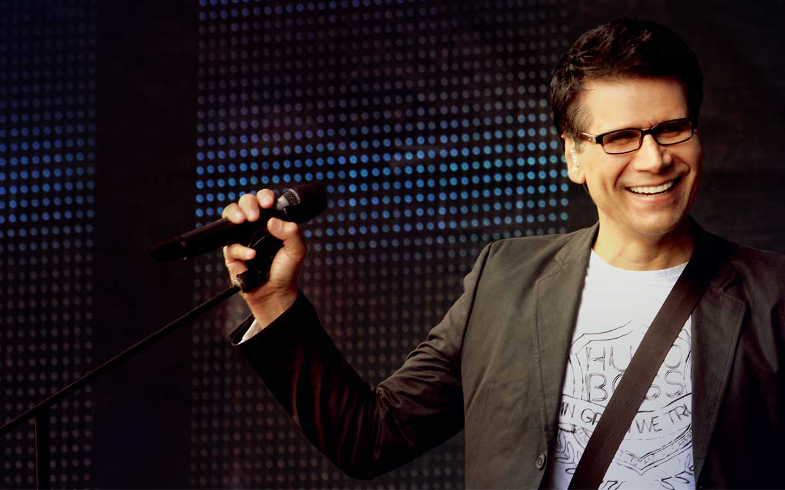

JAR en Concierto
La música de Jesús Adrián Romero es muy versátil, suena por igual en una actividad católica, en un templo protestante y hasta en una tienda de la avenida Central. Lo que sus seguidores disfrutan es el mensaje de positivismo y también de agradecimiento a Dios.
Este artista y pastor mexicano volverá a Costa Rica para ofrecer un concierto como parte de su gira Soplando vida .
El intérprete de Como búfalo regresará al Estadio Nacional, escenario que conoce porque se presentó ahí en julio del 2013 y en mayo del 2012. (por Períodico La Nación)
